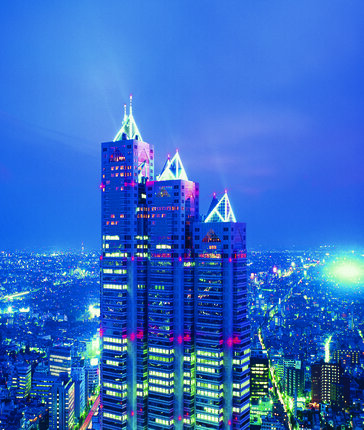
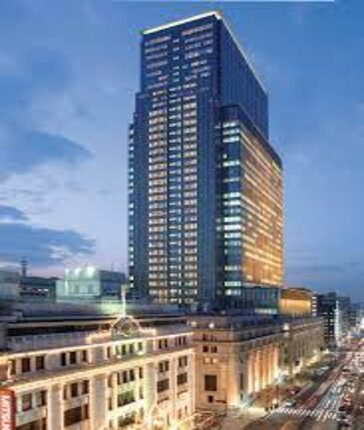
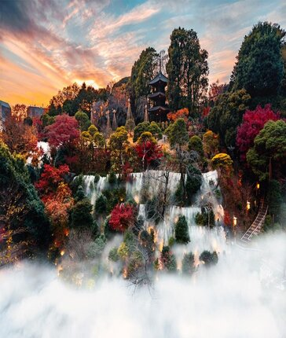

Tokyo
Brève description de Tokyo :
Tokyo est une métropole captivante, alliant tradition et modernité. C'est une ville dynamique, connue pour ses gratte-ciel étincelants, ses quartiers historiques, sa cuisine délicieuse et sa culture riche.
Points forts de Tokyo :
- Shibuya Crossing : La célèbre intersection où des milliers de personnes traversent simultanément.
- Le quartier de Shinjuku : Avec ses gratte-ciels imposants, ses bars, ses restaurants et son ambiance nocturne animée.
- Le temple Senso-ji : Un des plus anciens temples bouddhistes de Tokyo, situé dans le quartier d'Asakusa.
- Le quartier d'Akihabara : Un paradis pour les passionnés de technologie et de culture pop, avec ses magasins d'électronique et ses salles d'arcade.
- Le Palais Impérial : Résidence de l'Empereur du Japon, entouré de beaux jardins.
- Le quartier de Harajuku : Célèbre pour ses tendances de mode excentriques et son streetwear avant-gardiste.
- Le parc d'Ueno : Offre des musées, un zoo et de beaux espaces verts pour se détendre.
Bons plans à Tokyo :
- Explorer les izakayas : Des pubs japonais traditionnels pour déguster des plats locaux et des boissons.
- Assister à un spectacle de sumo : Pour découvrir ce sport traditionnel.
- Faire du shopping à Nakamise-dori : Une rue commerçante près du temple Senso-ji pour des souvenirs uniques.
- Visiter le Tokyo Metropolitan Government Building : Offre une vue panoramique sur la ville depuis son observatoire gratuit.
- Profiter des onsens : Des bains thermaux japonais pour se détendre après une journée de visites.
Nos Hotels
Découvrez l'élégance et le confort au cœur de Tokyo. Explorez nos hôtels offrant une expérience inoubliable dans cette métropole captivante, alliant luxe, culture et hospitalité japonaise authentique

Park Hyatt Tokyo
Tokyo

Mandarin Oriental Tokyo
Tokyo
.jpg)
The Peninsula Tokyo
Tokyo
.jpg)
Aman Tokyo
Tokyo

Hotel Chinzanso Tokyo
Tokyo
.jpg)
.jpg)
.jpg)
.jpg)
.jpg)
.jpg)
.jpg)
.jpg)
.jpg)
.jpg)